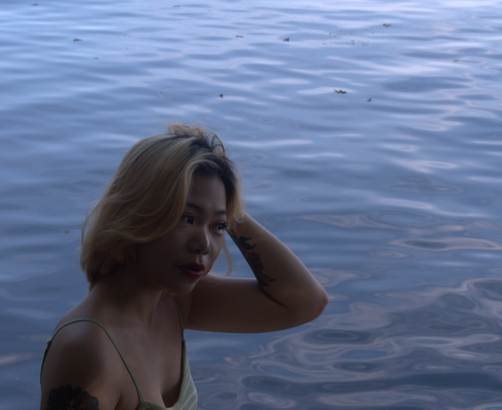

Outside of my major and minors, I have always had a passion for photography.
This is a collection of photos taken by me of my friend, Hazel.
I wanted to show Hazel's love for makeup and how it is a part of her identity.
She was so excited when she got LED lights for her room so I wanted to capture Hazel in her element at home.
Since Hazel lives on Lakeshore, she walks past this dock everyday. I found the way the lines met at her head very intriguing.
While we were sitting on a bench on Lakeshore, I loved the way the tree lined up with her and the way the sunlight hit Hazel's face.
UW-Madison is known for our iconic lake right on campus so I wanted to incorporate it into my photos.
I loved how the light was coming through the green leaves so I wanted to capture a photo of Hazelal camoflauged into the trees.